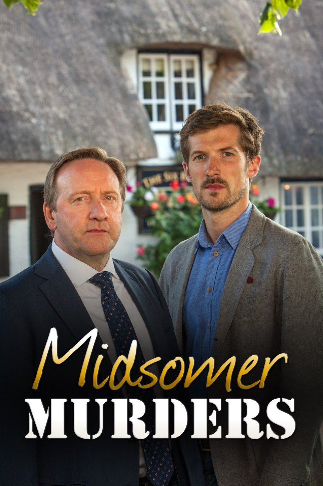

Midsomer Murders (Aired 1997-)
Rating: 7.7/10
Age Restriction: TV-PG
A veteran DCI and his young sergeant investigate murders around the regional community of Midsomer County.
Creator: Caroline Graham
Cast
John Nettles as .... DCI Tom Barnaby
Jane Wymark as .... Joyce Barnaby
Barry Jackson as .... Dr Bullard
Jason Hughes as .... DS Ben Jones
Laura Howard as .... Cully Barnaby
Neil Dudgeon as .... DCI John Barnaby
Daniel Casey as .... Sgt. Gavin Troy